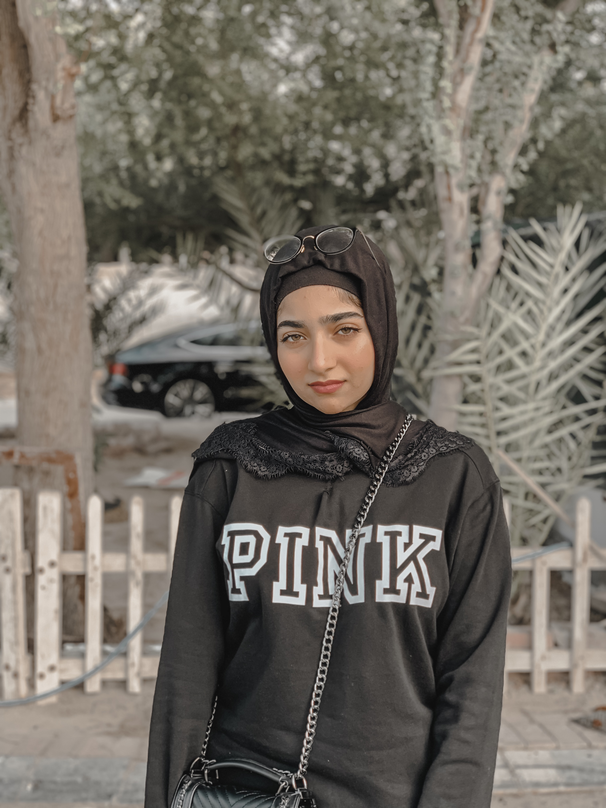
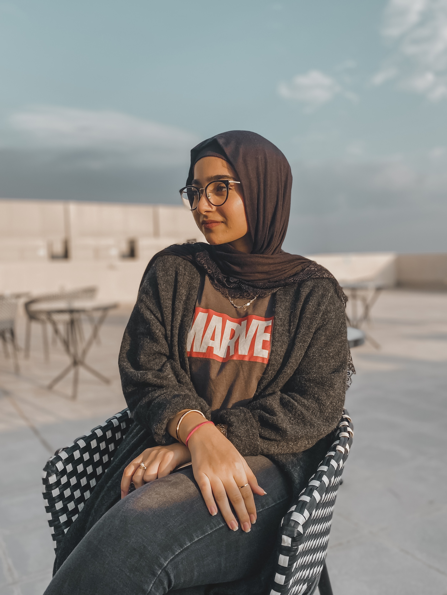

A little peak into a blogger's lifestyle and more!
My name is Fatema Najati, I was born of the 8th of January 2002. I started my first official blog account on Instagram right around September 2018 when i was 16 years old at the time.
That was the year I decided that I wanted to have a voice and an influence on young
girls that would be easily influenced by the unhealthy display of models and wrong lifestyles on social media, and I wanted
to be a difference that these girls seeked and one that I myself needed when I was once about their age.
Starting off, it was a challenge. A handful of people would recognize my face when I would show up to certain festivals or events, which was something i completely wasn't not used to at the time,
However as time passed I got used to it and appreciated everyone that came up to me to say 'Hello'. My account slowly grew around 1000 followers
by the end of that year and on this day, it holds upto 2.4K followers which I am very proud and appreciative of as I put alot of effort and time into growing it and
being a right influence as well as holding my standard high and staying positive through it all.
Get to know me:
My blog started off to be mainly about me and the things i did throughout my day. Although it would be weird at first; i got the hang of it
quite soon after. I would post pictures that would look attractive to the eyes and try to improve from each picture on my profile, making it look
better than the last one.
My Growth Journey:
Let me just say, being "out there" is definately not for everyone. As a beginner in this industry, I've seen the positives
as well as the negatives that it brings to one's way of life. A lifestyle as such needs someone who can stand tall through all the hate and negativity
whilst having confidence in what they do and how they do it. You have to train your mind to see the good in every situation and never back down out of your place because thats what
they ultimately want to see, and we don't give it to them.
This step I took in 2018, was a big risk that I knew nothing about and simply went into it out of curiousity and
the thought of what it would be like to have an "influence". Nevertheless, I wouldn't be here if it weren't from the love of my parents and
unconditional support from my friends and family. Their faith in me is what has helped me grow and love what I do today.
If i were to look back 5 years, i would have never expected myself to have an open account with thousands of people watching what i do everyday,
Although i would always admire the big influencers on social media and always want to be one myself, never in a million years would i have thought of doing it,
But here i am, with 2400+ followers writing a blog about it and simply loving what i do everyday of my life.
During the first few months of being a blogger, it was weird and awkward to have my phone out with me every second of the day, to capture things and post it up on my
timeline. It felt as though the whole world was watching what I was doing and I felt like a complete weirdo doing it
in public. By time it started to get easy and I wouldn't care as much about what others would say or think, as long as it made
me happy, I decided to go for it. Thats the best part about being a full time blogger; you build confidence through these situations
and help others gain this confidence as well. Whenever I see young girls not have that much confidence or self-esteem
in themselves, I would always tell them to do whatever makes them happy, regardless if others like it or not (ofcourse, within limits) and after that, they would be in their happiest and best form,
because life is too short to live in the way that others want us to.
If i didn't take a shot at opening my account up to the public and seeing where it went, i would've never known that it would be successful only
in it's the first year. My point is; Always go after your hobbies and dreams.


I had to adapt to many things which were uncomfortable at first, However these are also a few steps that I learned as a beginner:
Use the following to send me an email: